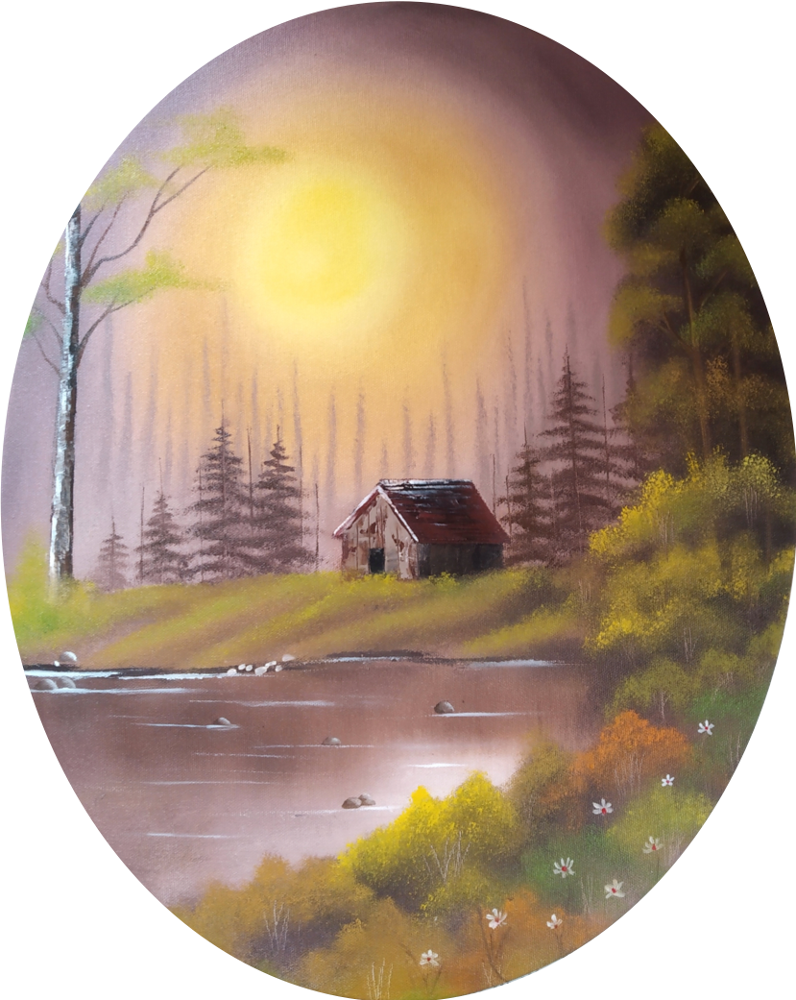

Art: a variety of kinds
Hobby in-chief • 2015 to forever?


Currently finding inspiration in: Dartmouth fall!

↑ Fall vibes in oil paint. I use a 12 inch canvas sketchbook for this stuff 🎨
The best thing about art is the opportunity to experiment (the wastepaper basket is a good friend), draw rough sketches and put ideas on paper! There's something magical about seeing an abstract idea in your head come to life️️ 🌈
↑ Homemade clay flowers (warning: it gets messy 😉)
↑ This is actually created with natural wax and a bunch of random brush strokes; hence the 3D effect